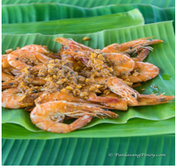

Steamed Fish with Mayonnaise
Ingredients:
- 1 piece fish about 3 to 5 lbs
- ¾ cup scallions sliced
- 2 thumbs ginger julienne
- 1 ½ teaspoons salt
Mayo dressing
- 1 ½ cups Lady's Choice Mayonnaise
- ¼ teaspoon salt
- ¼ teaspoon onion powder
- ¼ teaspoon garlic powder
- ½ teaspoon sugar
Toppings:
- 1 piece red bell pepper minced
- 3 pieces hard-boiled eggs
- 1 piece carrot minced
- ½ cup sweet relish
Instructions:
- Clean the fish by removing the innards, gills, and scales (if necessary).
- Rub salt on the inner and outer parts of the fish. Stuff fish with scallion and ginger.
- Pour-in about 1 to 1 1/2 quart water in a wide steamer. Let boil. Put the fish in and
- steam for 35 to 45 minutes depending on the size of the fish. The large the fish, the longer the steaming time.
- Remove the fish from the steamer and then arrange on a serving plate. Let the excess water drip.
- Meanwhile, combine Lady's Choice Mayonnaise with the other mayo dressing ingredients. Mix well.
- When the fish reaches room temperature, spread the mayonnaise mixture over the fish.
- Separate the egg white from the yolk. Mince the eggs. Arrange the topping ingredients over the mayo mixture
- Refrigerate the fish for 3 hours.
- Serve. Share and enjoy!
Broiled Lobster Tail with Lemon Butter Sauce
Ingredients:
- 3 large lobster tails
- 1 teaspoon garlic powder
- 1 teaspoon salt
Lemon Butter Sauce
- Juice from 1/2 lemon
- 1/4 cup unsalted butter
- 3 tablespoons whipping cream
Instructions:
- Set the oven to broil.
- Open the lobster tail by cutting the top shell using a pair of scissors. Start from the topmost part (lengthwise)until it reaches the far end. Push the shell sideways to expose the meat. Manually pull the meat out to expose it.
- Combine salt and garlic powder. Sprinkle the mixture over the lobster meat. Rub it all over the lobster meat.
- Arrange the lobster in a baking tray. Broil for 8 to 10 minutes.
- Meanwhile, prepare the sauce by melting butter in a saucepan. Add lemon juice and whipping cream. Stir. Set aside.
- Remove the broiled lobster from the oven. Arrange in a serving plate. Top with lemon butter sauce.
- Serve. Share and enjoy!
Seafood Kare Kare Recipe
Ingredients:
- 1/2 lb. shrimp with head and shell cleaned
- 2 crabs steamed
- 1/2 lb. mussels boiled in 3/4 cup water
- 1 medium squid
- 8 to 10 string beans tied in knots
- 1 small banana heart chopped
- 2 cups coconut cream
- 5 tablespoons peanut butter
- 1 1/2 tablespoons annatto powder astuete diluted in 3 tablespoons water
- 2 tablespoons fish sauce
- 3 tablespoons shrimp paste
- 6 tablespoons cooking oil
- Water
Instructions:
- Pour 5 cups of water in a cooking pot. Let boil. Blanch the string beans and banana blossoms by placing these in the pot with boiling water and cook it for 3 to 4 minutes. Remove the vegetables and put these on a bowl with cold water and ice. Let it stay in the bowl for 3 minutes. Remove from the bowl and set aside.
- Heat 3 tablespoons of cooking oil in a pan. Pan fry the shrimp in medium heat for 2 minutes per side.Remove the shrimp from the pan. Set aside.
- On the same pan, pan fry the squid using the remaining oil for 2 minutes per side. Do not overcook the squid as it will get tough. Remove the squid from the pan and set it aside.
- Pan fry the steamed crabs on the same pan for 2 1/2 minutes per side. Add more oil if needed. Set aside.
- Put the mussels on the same pan and pan fry or stir fry for 4 minutes total. Pour-in the water used to boil the mussels (or if you are using pre-cooked mussels, use the water in the package). Deglaze the pan by gently rubbing your spatula on the surface until bits of seafood are diluted in the liquid. Remove the mussels from the pan and then place the liquid on a separate bowl.
- Using a clay pot (palayok) or regular cooking pot, heat 3 tablespoons of cooking oil and then saute the garlic and onion.
- Once the onion turns soft, pour-in the coconut milk. Let boil.
- Add the liquid from the frying pan. Stir.
- Add the peanut butter. Stir and cook until it is completely diluted.
- Add the fish sauce (patis). Stir
- Pour-in the annatto powder diluted in water. You may add more annatto powder to get your desired color. Cook for 2 to 5 minutes in medium heat while stirring.
Cioppino Recipe
Ingredients:
- 1 lb. fish steak I used swordfish steak
- 12 to 15 pieces large sea scallops
- 1 lb mussels
- 1/2 lb. Manila clams
- 1/2 lb. large shrimp
- 2 Dungeneous crab clusters
- 1/2 lb squid rings
- 1.5 oz. fresh basil
- 1/2 cup chopped flat leaf parsley
- 1 14 oz. can diced tomato
- 1 medium red bell pepper sliced into strips
- 6 tablespoons tomato paste
- 2 cups Pinot Grigio white wine
- 2 cups water
- 1 medium yellow onion wedged
- 1/2 fennel bulb chopped
- 4 cloves garlic crushed
- 1/8 teaspoon Cayenne pepper powder
- 3 tablespoons extra virgin olive oil
- Salt and ground black pepper to taste
Instructions:
- Heat oil in a cooking pot.
- Once the oil starts to get hot, add the chopped fennel bulb. Saute for 1 minute.
- Add onion and garlic. Continue to saute until onion becomes soft and translucent.
- Pour canned diced tomato, water, and Pinot Grigio wine. Let boil. Continue to boil in medium heat for 5 minutes.
- Add the fish steaks, shrimp, and scallops. Cook for 1 to 2 minutes.
- Remove the fish and seafood from the pot using a slotted spoon. Set aside.
- Add basil, bell pepper, and parsley. Stir.
- Add crab, clams, and mussels. Cover the pot. Cook for 3 to 5 minutes.
- Put the fish, shrimp, and scallops back into the pot. Gently stir.
- Add Cayenne pepper, salt and ground black pepper.
- Transfer to a serving bowl.
- Serve with toasted sour dough bread.

Shrimp with Butter and Taba ng Talangka Recipe
Ingredients:
- 1 lb. shrimp cleaned
- 5 tablespoons unsalted butter or margarine
- 1/4 cup taba ng talangka
- 2 pieces calamansi
- 1 head garlic chopped
- 1 teaspoon white vinegar
- 1/8 teaspoon ground black pepper or cracked peppercorn
- Salt to taste
Instructions:
- Melt butter or margarine in a pan.
- Add shrimp. Continue to cook for 3 to 5 minutes or until the shrimp turns orange.
- Add garlic. Stir fry for 30 seconds.
- Put the salt into the pan. Stir.
- Season with cracked peppercorn (or ground black pepper).
- Add the crab fat (taba ng talangka). Stir. Cook for 2 minutes.
- Pour calamansi and vinegar. Stir. Cook for 3 to 4 minutes.
- Transfer to a serving plate. Serve.
- Share and enjoy!
Tinulang Tahong
Ingredients:
- 1 lb mussels tahong, cleaned
- 2 cups spinach or hot pepper leaves
- 3 thumbs ginger julienned
- 1 piece onion sliced
- 5 cloves garlic pounded
- 1 1/2 teaspoons salt or 3 tbsp fish sauce
- 1/2 teaspoon ground black pepper
- 3 cups water
- 2 tablespoons cooking oil
- 2 pieces long green pepper optional
Instructions:
- Heat a cooking pot and pour-in cooking oil.
- Saute garlic and onion.
- Add ginger and mussels, and then cook for a minute.
- Pour-in water. let boil. Cook for 5 minutes.
- Put-in the spinach or hot pepper leaves. Cook for 3 minutes
- Add salt (or fish sauce) and pepper. Stir.
- Transfer to a serving bowl. Serve. Share and enjoy.